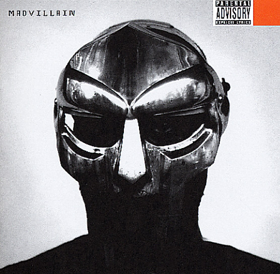
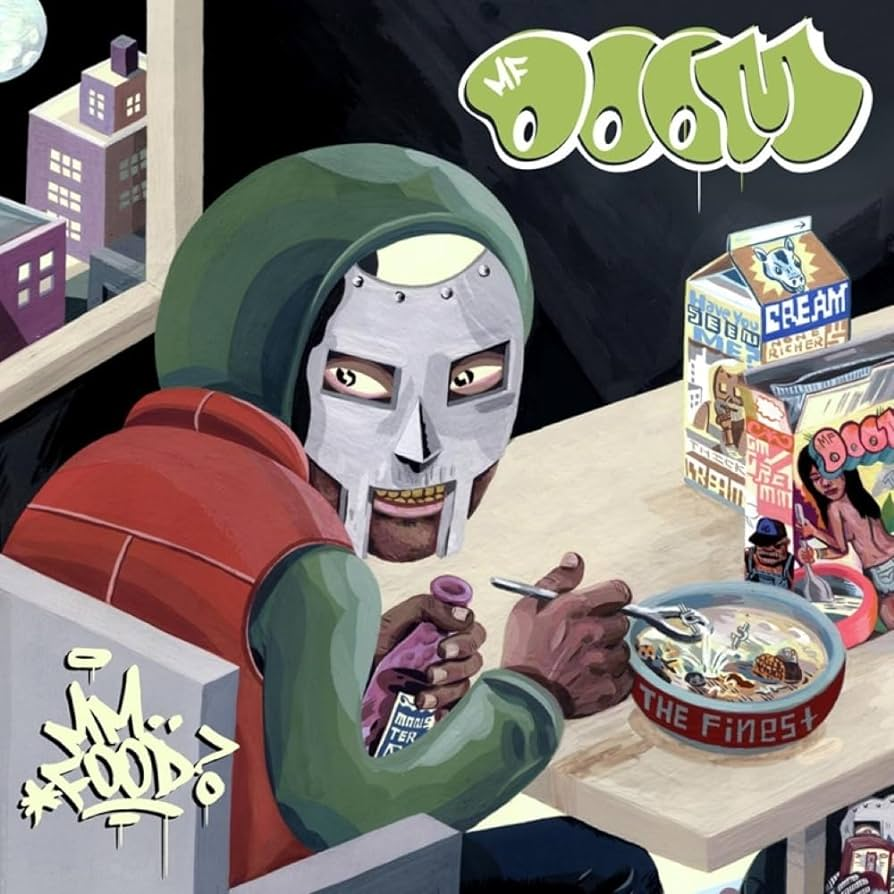
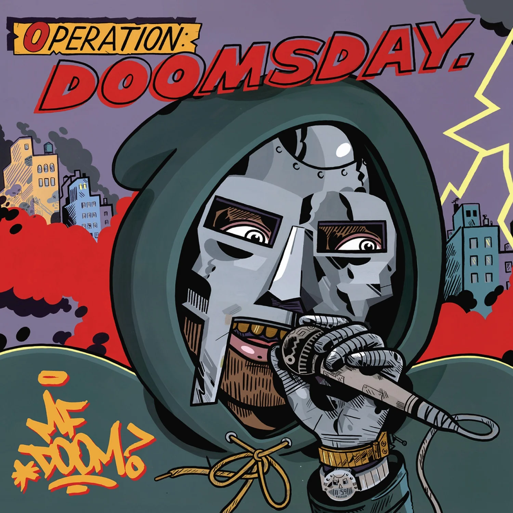
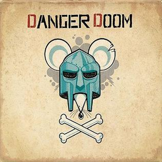
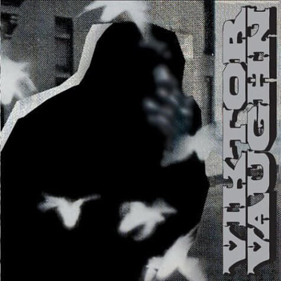
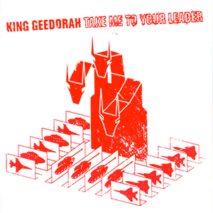

"Madvillainy," released in 2004, stands as a groundbreaking hip-hop album resulting from the collaboration between MF DOOM (Daniel Dumile) and producer Madlib (Otis Jackson Jr.). Highly acclaimed for its distinctive production, abstract lyrics, and innovative sound, the album showcases MF DOOM's intricate rhymes, characterized by dense wordplay and cryptic references, seamlessly blending with Madlib's eclectic and jazz-influenced beats. The lo-fi and off-kilter production style, featuring samples from jazz, soul, and old movie dialogue, contributes to the album's uniqueness. Known for brevity in tracks and quick transitions between beats and verses, "Madvillainy" is regarded as a landmark in underground hip-hop, with standout tracks such as "Accordion," "All Caps," and "Raid." The collaborative effort has left an enduring impact on the genre, influencing subsequent artists and producers and earning its status as a classic and innovative work in hip-hop history. "Madvillainy" is highly regarded in the hip-hop community for its unique production, DOOM's intricate lyricism, and the overall cohesion of the album.
Released in 2004, "Mm.. Food" is a significant album by the enigmatic hip-hop artist MF DOOM (Daniel Dumile). Renowned for its conceptual depth and lyrical prowess, the album serves as a culinary-themed exploration of food-related metaphors and wordplay. MF DOOM's intricate rhymes are accompanied by his distinctive mask-clad persona, adding a layer of mystery to the project. With tracks like "Beef Rapp," "Hoe Cakes," and "Rapp Snitch Knishes," the album delves into DOOM's complex storytelling and satirical commentary on various aspects of life. The production, handled by DOOM himself, features innovative sampling, intricate beats, and a diverse range of musical influences. "Mm.. Food" is celebrated for its thematic cohesion, clever lyricism, and unique sonic landscape, solidifying MF DOOM's reputation as a visionary in the hip-hop genre. "Mm.. Food," released in 2004, is a seminal album by MF DOOM, known for its clever wordplay and thematic depth. Featuring tracks like "Beef Rapp" and "Hoe Cakes," the album explores food-related metaphors with intricate rhymes and satirical commentary. Produced by MF DOOM himself, the album's innovative sampling and beats solidify his reputation as a visionary in hip-hop. With its unique sonic landscape and mysterious persona, "Mm.. Food" remains a landmark work in the genre, showcasing DOOM's lyrical prowess and conceptual brilliance.
"Operation: Doomsday," released in 1999, stands as a seminal work in the hip-hop landscape, marking the debut solo album of the masked and enigmatic rapper MF DOOM (Daniel Dumile). This album holds a distinctive place in underground hip-hop, characterized by DOOM's intricate lyricism, unorthodox flow, and innovative production. Following the artist's reinvention after the loss of his brother and former musical partner Subroc, the album weaves a narrative that combines comic book references, science fiction elements, and a gritty, street-level perspective. Tracks like "Doomsday," "Rhymes Like Dimes," and "Red and Gold" showcase DOOM's skillful storytelling and unique rhyme schemes. The production, largely handled by DOOM himself under various pseudonyms, incorporates a diverse array of samples, creating a sonic landscape that complements the album's thematic depth. "Operation: Doomsday" not only established MF DOOM as a formidable force in hip-hop but also laid the foundation for his influential career in the years to come.
"The Mouse and the Mask," a collaborative album released in 2005 by MF DOOM (Daniel Dumile) and Danger Mouse (Brian Burton), is a genre-defying masterpiece that seamlessly merges hip-hop with animated aesthetics. Serving as a conceptual collaboration with Cartoon Network's Adult Swim, the album features DOOM's intricate wordplay and dynamic delivery over Danger Mouse's innovative production. The project showcases DOOM's ability to effortlessly weave together pop culture references, humor, and social commentary. Standout tracks like "Sofa King," "Benzie Box," and "Old School" highlight the album's sonic diversity and DOOM's lyrical prowess. With contributions from a stellar cast of guest artists, including Ghostface Killah and CeeLo Green, "The Mouse and the Mask" stands as a testament to MF DOOM's versatility and remains a cult favorite for its imaginative approach to both music and animation culture.
**Vaudeville Villain** is an album by British-American rapper and producer MF DOOM, released under the alias Viktor Vaughn. The album, released in 2003, is a concept piece that follows the story of Viktor Vaughn, a time-traveling super-villain with a complex and intricate narrative. With gritty production and DOOM's signature lyricism, the album explores themes of villainy, street life, and science fiction. Vaudeville Villain showcases DOOM's storytelling prowess, with each track contributing to the overarching narrative. The production is characterized by raw beats, unconventional samples, and Vaughn's vivid and often humorous storytelling. Overall, Vaudeville Villain stands as a testament to MF DOOM's innovative approach to hip-hop and his ability to craft immersive and unconventional musical experiences. "Vaudeville Villain" showcases DOOM's storytelling ability and unique production style, and it's considered another notable entry in his discography. If you have any more questions or if there's anything else I can help you with, feel free to ask!
**Vaudeville Villain** is an album by British-American rapper and producer MF DOOM, released under the alias Viktor Vaughn. The album, released in 2003, is a concept piece that follows the story of Viktor Vaughn, a time-traveling super-villain with a complex and intricate narrative. With gritty production and DOOM's signature lyricism, the album explores themes of villainy, street life, and science fiction. Vaudeville Villain showcases DOOM's storytelling prowess, with each track contributing to the overarching narrative. The production is characterized by raw beats, unconventional samples, and Vaughn's vivid and often humorous storytelling. Overall, Vaudeville Villain stands as a testament to MF DOOM's innovative approach to hip-hop and his ability to craft immersive and unconventional musical experiences.
